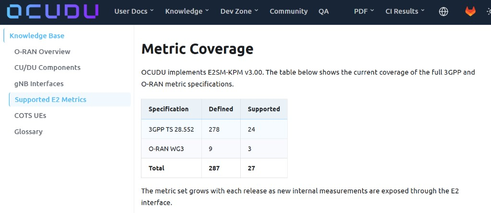
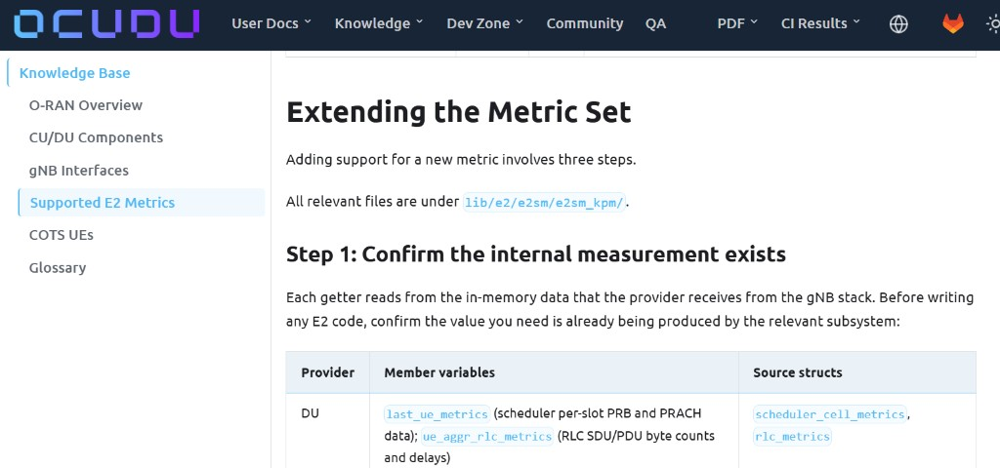

Core
A mesma imagem do Open5GS virava um container por função: NRF, AMF, SMF, UPF e as outras. MongoDB e WebUI ficavam ao lado, cada um com o IP do .env.
Grupo Open RAN UNB
Novembro de 2026
Retrospectiva · março de 2026
Começamos pelo Docker Compose. No fim do mês a pilha sobe mas o UE ainda não faz attach.
A mesma imagem do Open5GS virava um container por função: NRF, AMF, SMF, UPF e as outras. MongoDB e WebUI ficavam ao lado, cada um com o IP do .env.
A mesma imagem virava dois containers, CU e DU. O CU ficava na rede do core e na do RAN. O DU, na do RAN e na do RIC. Com o E2 ligado e o RIC fora, a conexão recusada derrubava o DU, e ele reiniciava em loop.
Um container na rede do RAN, com rádio ZMQ até o DU. O UE só sincroniza se a célula já está ativa. Subir os dois juntos deixa os dois esperando o primeiro quadro, e o attach não acontece nesse mês.
Compose próprio, um container por componente, todos na mesma rede. O trabalho do deploy foi a ordem de subida. O E2Term se anuncia uma vez. Reiniciar ele no meio derruba a associação, e o CU fica desconectado.
Vários anúncios saem uma vez só. Se o destinatário ainda não está pronto, a mensagem se perde e ninguém tenta de novo.
Retrospectiva · a nuvem
Em abril a pilha saiu do Compose e foi para o GCP. A ideia era deixar a rede Open RAN de pé numa passada só.
Descrevia rede e máquinas no GCP. O cluster era instalado em cima desse ambiente.
Instalava o Kubernetes nessas máquinas e deixava o cluster pronto para receber a pilha.
Instalava core, RIC e RAN por chart. Cada chart reunia os pods, os serviços e a configuração daquela parte.
Executava a ordem: infraestrutura, cluster, charts. SCTP, F1 e E2 têm ordem, e a passada única ainda deixava a pilha pela metade.
Os custos se acumulavam sem resultado.
Retrospectiva · maio de 2026
Ainda no GCP:
Retrospectiva · junho e julho de 2026
Retrospectiva · agosto de 2026
Retrospectiva · setembro a novembro de 2026
Onde estamos
Plano de dados
Bytes do assinante. O SIM é cadastrado no Open5GS.
Telemetria E2
Medição KPM. Nesta xApp nova, também volta um controle. O download segue pelo UPF.
Gestão
Configuração de cada site. Ansible sobe a máquina. Helm sobe a pilha base.
NMI, cinco nós amd64: core e RAN no control plane, E2Term no primeiro worker, xApps no segundo, Grafana no servidor físico, Nephio na VM de gestão. CIC, dois nós Ampere, com a xApp ARM. O RIC fica no NMI.
Onde estamos · o que já foi medido
SESSÃO
O UE registra, autentica e recebe um endereço 10.45.0.x. A sessão era recusada: SMF e UPF anunciavam endereços diferentes. Os dois passaram a usar o IP do pod, e o ping ao gateway fecha com perda zero.
KPI
Numa transferência de 50 MB, HTTP 200, o pico de DRB.UEThpDl foi o mesmo no NMI e no CIC.
ENTREGA
A imagem é publicada para amd64 e arm64. O pacote fixa o digest. Os dois sites rodam o mesmo build.
Em agosto entraram o NMI, o Nephio e o CIC ARM, com sessão PDU e KPM ao vivo. Pronto passou a ser essa sessão, o KPM decodificado e o mesmo número nos dois sites.
Onde estamos · acompanhamento
Pod Running só diz que o processo subiu. O painel diz se a rede está medindo e se a xApp está vendo isso.
Core, RAN e RIC, nós do NMI e do CIC, reinício de pod. Os dois sites ficam no mesmo lugar.
Throughput, carga, uplink e cota de PRB. Cada xApp publica a própria série enquanto o teste roda.
Com tráfego, o KPI sobe. Sem tráfego, volta ao ocioso. É assim que a gente confirma que a xApp acompanha a rede.
Onde estamos · recuperação
Depois de uma queda de energia, de rede ou da DU, estes três estados não voltam sozinhos.
O UE fica no endpoint da DU anterior. O script desliga o UE, reinicia a DU e só então liga o UE. Pronto é o endereço em tun_srsue.
AppMgr e RTMgr perdem o inventário. A assinatura continua registrada e a indicação deixa de chegar. O script registra as xApps, recarrega o RTMgr e assina outra vez. O E2Term permanece no ar.
A DU volta com outra associação E2. As xApps ainda assinam a anterior. O script espera o O-DU no E2Mgr e recria só as xApps de monitoramento.
Trabalho atual · xApps
Cada uma foi feita em cima da anterior. O tráfego do assinante continua no UPF.
Assina DRB.UEThpDl e publica a série. A indicação E2 chega no pod, no NMI e no CIC.
Média móvel de cinco amostras. Três estados: idle, active, busy. Janela e limiares vêm do pacote.
Média móvel no uplink, DRB.UEThpUl. Entrou pelo gerador e foi entregue pelo Flux.
Mede volume de downlink por UE. Passou do limiar, manda um controle E2SM-RC. É o que está em desenvolvimento.
Trabalho atual · kpm-anomaly-prb
1
KPM Style 4, por UE: volume de SDU RLC no downlink, em kbit.
2
Média de 5 amostras. O limiar padrão é 1.000 kbit. Um UE parado fica abaixo.
3
E2SM-RC Style 2, Ação 6. A cota máxima de PRB do slice vai a zero.
Nesta versão do OCUDU, o controle RIC que existe é a cota de PRB do slice. Release de RRC não está implementado.
A xApp manda o comando no máximo uma vez por UE. Para decidir de novo, o pod precisa ser recriado.
Rajada de download não vira SDU RLC a tempo. O teste é um fluxo constante, saindo do UPF.
Próximos desafios
O OCUDU já implementa a cota de PRB do slice e o handover. Falta validar que cada um deu certo.
Nome, rota e arquitetura ainda estão gravados. Dá para evoluir para algo mais fluido e dinâmico.
Hoje a célula atende um UE por vez. Precisamos evoluir para vários UEs ao mesmo tempo.
Próximos desafios · métricas E2
A rede hoje exercita três KPIs. O OCUDU implementa E2SM-KPM v3.00 e lista 27 métricas suportadas, de 287 definidas. Queremos assinar, estimular e decodificar essas 27.

Próximos desafios · expansão de métricas
Os três passos estão em lib/e2/e2sm/e2sm_kpm/. No laboratório, a métrica entra na conta quando a xApp decodifica a indicação.
1 Confirmar
O DU, o CU-CP ou o CU-UP já calcula esse valor. O código E2 só lê o que já está na memória.
2 Medir
O getter devolve um agregado, ou um registro por UE, a partir dos dados que o provider já recebe.
3 Anunciar
O provider registra nome, rótulo e granularidade. O E2 Setup passa a oferecer a métrica ao RIC.

Próximos desafios · slicing
A ação RIC que o OCUDU 26.04 implementa é a cota de PRB do slice. Hoje ela zera um UE. Queremos escolher os três percentuais e conseguir desfazer.
E2SM-RC Style 2, Ação 6. Três percentuais por UE: mínimo, máximo e dedicado. As outras ações recebem recusa.
A kpm-anomaly-prb manda os três para zero, uma vez. PLMN e S-NSSAI estão fixos no código. A rede tem um slice, SST 1.
A cota vira parâmetro da xApp. O Grafana mostra os três números, e um comando seguinte devolve a cota anterior.
Próximos desafios · repositórios
Hoje o algoritmo, o pacote Nephio e a imagem nascem neste repositório. A ideia é cada xApp ter o seu.
Core, RAN, RIC, Nephio e o contrato do xAppBase.
Código, teste, imagem e blueprint de cada xApp, num repositório próprio.
Continua por digest, PackageVariant e Flux. A conta do aluno continua sem admin no cluster.